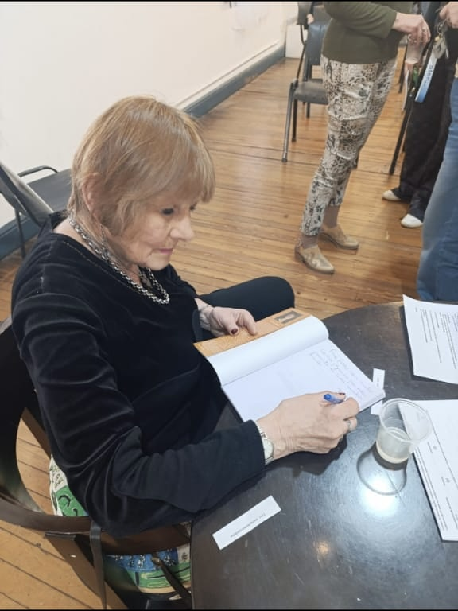
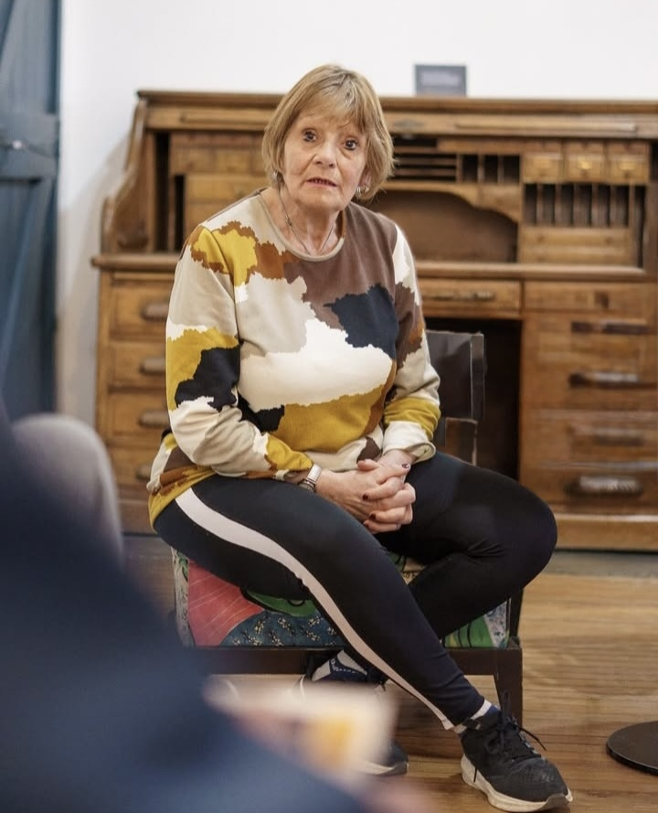

Historia
Este microemprendimiento familiar inició en una reunión familiar en el año 2025. Se decidió comenzar con un pequeño negocio, poniendo todo el conocimiento de costura, marketing y todo lo necesario para que nuestro proyecto se llevara a cabo, incluyendo cursos en instituciones y particulares. Este emprendimiento está destinado a la fabricación y diseño de marroquinería textil. Cuyos objetos consisten en bolsos, neceser, cartucheras, artículos escolares, oficina y personales. Los materiales utilizados son: telas, cuerina, cordura y telas planas. Debemos destacar que cada integrante del grupo familiar cumple con una función específica, la que bajo su responsabilidad debe cumplir con su tarea. Todos los productos que se ponen a la venta son artesanales

